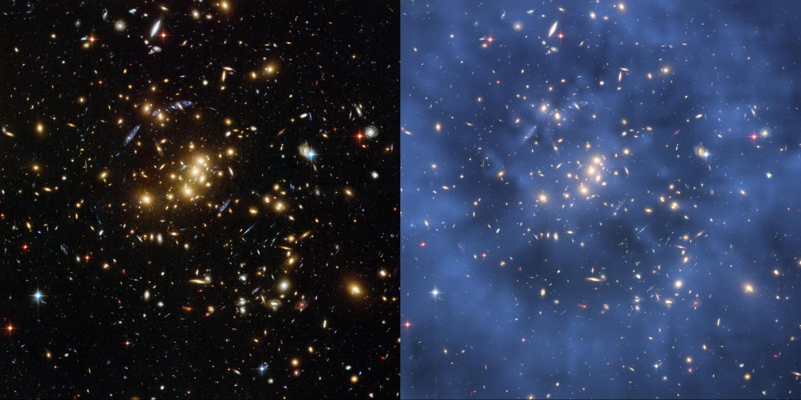
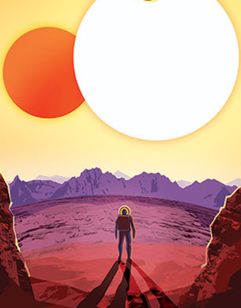
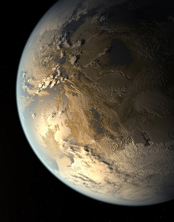
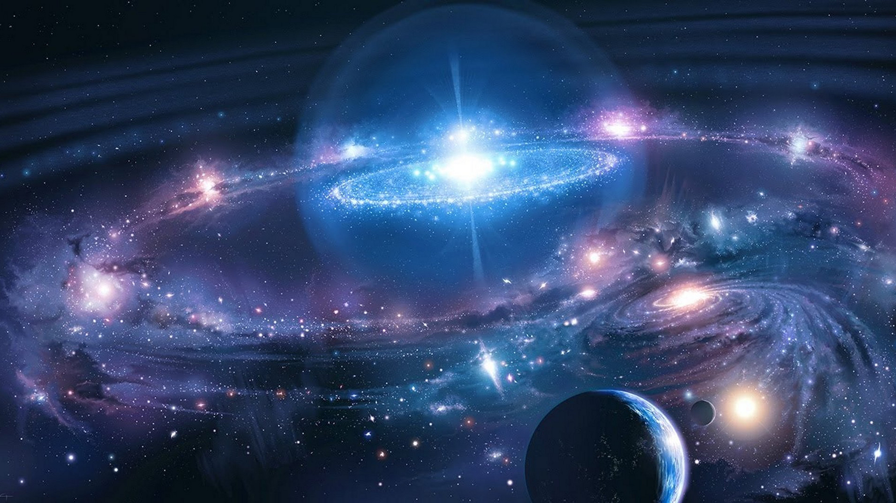
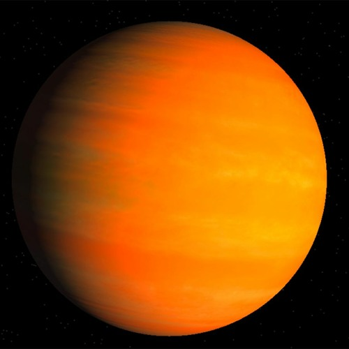

The universe is all of space and time[a] and their contents,[10] including planets, stars, galaxies, and all other forms of matter and energy. The Big Bang theory is the prevailing cosmological description of the development of the universe. According to this theory, space and time emerged together 13.787±0.020 billion years ago,[11] and the universe has been expanding ever since the Big Bang. While the spatial size of the entire universe is unknown,[3] it is possible to measure the size of the observable universe, which is approximately 93 billion light-years in diameter at the present day.
AGE : 13.787 ± 0.020 billion years Diameter : 8.8×1026 m (28.5 Gpc or 93 Gly) Mass (ordinary matter) : At least 1053 kg Average density : 9.9×10−27 kg/m Average temperature : 2.72548 K (−270.4 °C, −454.8 °F)[7] Main contents : Ordinary (baryonic) matter (4.9%) Dark matter Shape : Flat with 4‰ error margin

What is the universe made of ?
The universe contains all the energy and matter there is. Much of the observable matter in the universe takes the form of individual atoms of hydrogen, which is the simplest atomic element, made of only a proton and an electron (if the atom also contains a neutron, it is instead called deuterium). Two or more atoms sharing electrons is a molecule. Many trillions of atoms together is a dust particle. Smoosh a few tons of carbon, silica, oxygen, ice, and some metals together, and you have an asteroid. Or collect 333,000 Earth masses of hydrogen and helium together, and you have a Sun-like star.
Explore Alien Worlds

EXOPLANET TRAVEL BUREAU
This set of travel posters envision a day when the creativity of sientists and engineers will allow us to do things we can only dream of now.

STRANGE NEW WORLDS
Explore an interactive gallery of some of the most intriguing and exotic planets discovered so far.
HISTORIC TIMELINE
A planetary tour through time. The ancients debated the existance of planets beyond our own; now we know of thousands.
How has our view of the universe changed over time ?
Human understanding of what the universe is, how it works and how vast it is has changed over the ages. For countless lifetimes, humans had little or no means of understanding the universe. Our distant ancestors instead relied upon myth to explain the origins of everything. Because our ancestors themselves invented them, the myths reflect human concerns, hopes, aspirations or fears rather than the nature of reality.
Several centuries ago, however, humans began to apply mathematics, writing and new investigative principles to the search for knowledge. Those principles were refined over time, as were scientific tools, eventually revealing hints about the nature of the universe. Only a few hundred years ago, when people began systematically investigating the nature of things, the word “scientist” didn’t even exist (researchers were instead called “natural philosophers” for a time). Since then, our knowledge of the universe has repeatedly leapt forward. It was only about a century ago that astronomers first observed galaxies beyond our own, and only a half-century has passed since humans first began sending spacecraft to other worlds.

MULTIPLANET UNIVERSE DISCOVERED
The European Southern Observatory’s Very Large Telescope (ESO’s VLT) has taken the first ever image of a young, Sun-like star accompanied by two giant exoplanets. Images of systems with multiple exoplanets are extremely rare, and — until now — astronomers had never directly observed more than one planet orbiting a star similar to the Sun. The observations can help astronomers understand how planets formed and evolved around our own Sun.
ESO is the foremost intergovernmental astronomy organisation in Europe and the world’s most productive ground-based astronomical observatory by far. It has 16 Member States: Austria, Belgium, the Czech Republic, Denmark, France, Finland, Germany, Ireland, Italy, the Netherlands, Poland, Portugal, Spain, Sweden, Switzerland and the United Kingdom, along with the host state of Chile and with Australia as a Strategic Partner
Though the universe may seem a strange place, it is not a distant one. Wherever you are right now, outer space is only 62 miles (100 kilometers) away. Day or night, whether you’re indoors or outdoors, asleep, eating lunch or dozing off in class, outer space is just a few dozen miles above your head. It’s below you too. About 8,000 miles (12,800 kilometers) below your feet — on the opposite side of Earth — lurks the unforgiving vacuum and radiation of outer space.
In fact, you’re technically in space right now. Humans say “out in space” as if it’s there and we’re here, as if Earth is separate from the rest of the universe. But Earth is a planet, and it’s in space and part of the universe just like the other planets. It just so happens that things live here and the environment near the surface of this particular planet is hospitable for life as we know it. Earth is a tiny, fragile exception in the cosmos. For humans and the other things living on our planet, practically the entire cosmos is a hostile and merciless environment.
EXPLORE NEW WORLDS

KELPER 16B
DISCOVERED 2011
Kepler-16b is a world where two suns set over the horizon instead of just one, the first Tatooine-like planet found in our galaxy.
A possible ocean world orbiting in the habitable zone—the region around a star where the temperature is right for liquid water, a requirement for life on Earth.